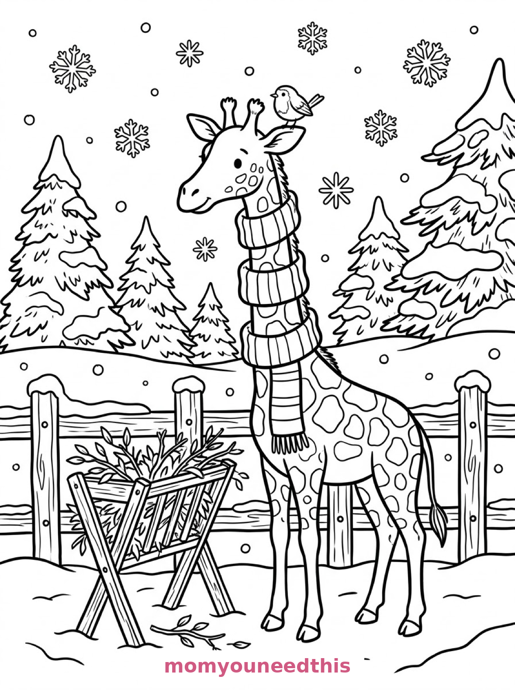
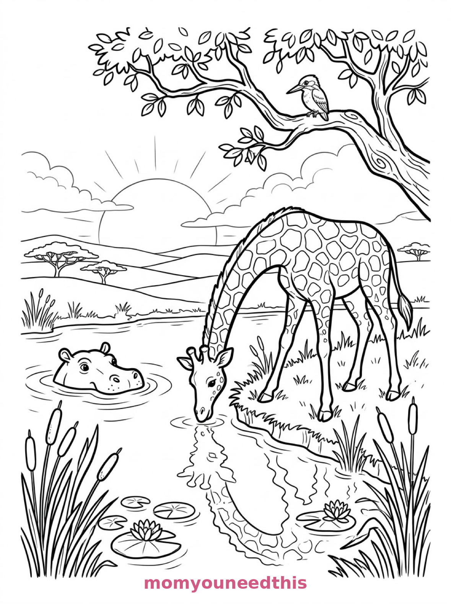

Free Giraffe Coloring Pages Savanna, Snowy Zoo & River Sunset Printables
These free giraffe coloring pages stretch from the savanna to a snowy zoo to a sunset river — a giraffe and calf at an acacia tree, a giraffe in a striped scarf, and a giraffe drinking at dusk. Download the set below, print at home on letter-size paper, and let the coloring fun begin. No signup needed.
Last updated: October 23, 2026
Quick Answer
Yes — this page has three free printable giraffe coloring pages: a tall giraffe nibbling an acacia tree with a baby giraffe beside it, a giraffe wearing a long striped scarf in a snowy zoo, and a giraffe bending down to drink from a river at sunset. Bold outlines and big spaces, made for little hands. Download, print on letter-size paper, and hand over the crayons — no signup, no cost.
At a Glance
- Ages: 3–8
- Pages: 3 free printables
- Format: Print at home, letter size
- Cost: Free, no signup
- Supplies: Crayons or markers
- Time: 10–20 minutes
🦒 Giraffe and Calf at the Acacia Coloring Page

🎨 Download Your Free Savanna Giraffe Coloring Page
A tall giraffe stretches its long neck to nibble leaves from the top of a flat-topped acacia tree, a baby giraffe beside it reaching toward a lower branch, a watering hole in the middle distance and a zebra grazing far behind — bold outlines, big spaces, zero signup.
⬇️ Download Free Savanna Giraffe Page 🖨️ Print Savanna Giraffe Page🎁 Free printable for preschoolers & kids
🧣 Giraffe in a Scarf at the Snowy Zoo Coloring Page

🎨 Download Your Free Snowy Giraffe Coloring Page
A giraffe wears a long striped scarf looped several times around its neck in a snowy zoo enclosure, with a wooden fence, a hay feeder filled with branches, a small robin perched on one ossicone and snowflakes falling all around — bold outlines, big spaces, zero signup.
⬇️ Download Free Snowy Giraffe Page 🖨️ Print Snowy Giraffe Page🎁 Free printable for preschoolers & kids
🌅 Giraffe Drinking at Sunset Coloring Page

🎨 Download Your Free Sunset Giraffe Coloring Page
A giraffe bends its neck down in a great curve to drink from a river at sunset, its reflection wavy in the water, a hippopotamus surfacing nearby, reeds and lily pads along the bank and a kingfisher perched on a leaning branch overhead — bold outlines, big spaces, zero signup.
⬇️ Download Free Sunset Giraffe Page 🖨️ Print Sunset Giraffe Page🎁 Free printable for preschoolers & kids
More Coloring Pages
Tap any picture to open its theme page and download the free printable.


🦒 How To Use This Page
- Browse the three designs and pick the giraffe your child will love most.
- Tap download or print under that design — the file opens full-size, ready for letter-size paper.
- Print a couple of copies of the savanna pair — two giraffes, twice the patch patterns.
- Color together with crayons or markers and stand tall.
🌍 Why Kids Love Giraffe Coloring Pages
Giraffes are the tallest, spottiest, most improbable animals a kid will ever color — and the patches are the point. Each patch is its own little island to fill, so a giraffe page is really dozens of tiny coloring pages strung along one very long neck. Kids lean in and settle down for these ones.
The three scenes also show giraffes in three weathers: savanna sun, zoo snow (with the scarf a giraffe would obviously need), and a sunset drink. Same animal, three completely different color stories.
🦒 Meet the Three Giraffe Scenes on This Page
The savanna pair. A tall giraffe stretches its long neck to nibble leaves from the top of a flat-topped acacia tree on the savanna, a baby giraffe standing close beside it reaching toward a lower branch, a watering hole with ripples in the middle distance, tufts of tall grass and rounded rocks scattered around, and a zebra grazing far behind. It is the classic page in the set — two giraffes, two heights, one tree.
The snowy zoo giraffe. A giraffe wears a long striped scarf looped several times around its neck, standing in a snowy zoo enclosure with a wooden fence, a hay feeder filled with branches beside it, a small robin perched on one of its ossicones, snow-covered pine trees behind the fence, and large snowflakes falling all around. It is the funniest page in the set — that scarf has a lot of neck to cover, and every loop is a stripe to color.
The sunset drink. A giraffe bends its neck down in a great curve to drink from a river at sunset, its reflection wavy in the water, a hippopotamus's head surfacing nearby, reeds and lily pads along the bank, a kingfisher perched on a leaning branch overhead, and layered hills with a large low sun on the horizon. It is the most beautiful page in the set — a whole sunset in one curve of a neck.
✏️ Giraffe Coloring Tips
- Patch by patch. Color the patches one shade and the coat between them a lighter one — or alternate patch colors for a party giraffe. There is no wrong patch.
- Stripe the whole scarf. The zoo giraffe's scarf loops several times — pick two or three colors and repeat them down the loops like a pattern.
- Sunset the sky in bands. Yellow at the horizon, orange above it, pink at the top: the sunset page is made for a three-band sky.
- Make the reflection wavy. Color the giraffe's reflection lighter and a little broken-up — water never gives back a perfect copy.
🦒 Coloring Pages for Different Ages
For ages 3 to 4, start with the savanna pair. Two big giraffes with big patches and a tree to fill are all a little colorer needs — patches forgive every wobble.
For ages 5 to 6, the snowy zoo giraffe is the sweet spot. The giraffe is one bold shape, and the scarf, the feeder and the falling snowflakes add a project with a punchline.
For ages 7 to 8, hand over the sunset drink. The reflection, the hippo, the kingfisher and the layered hills reward slow, careful coloring — the finished page is genuinely lovely.
🌅 More Giraffe Fun After Coloring
Patch counting: how many patches does the tall giraffe have? How many does the calf have? Counting patches on a finished page is a quiet math game that feels like a treasure hunt.
For the rest of the safari, visit the animal coloring pages — and the giraffe's tall neighbors wait on the elephant coloring pages, watering hole included.
🔗 More Free Printables You’ll Love
- Free Animal Coloring Pages Free printable animal coloring pages for little learners.
- Free Elephant Coloring Pages A watering hole, a circus elephant and a mango basket to color.
- Free Tiger Coloring Pages A waterfall rest, a pouncing cub and a dusk drink to color.
- All Free Coloring Pages Browse every free coloring page on the site, organized by theme.
❓ Giraffe Coloring Pages FAQ
Are these giraffe coloring pages really free?
Yes — all three designs on this page are free original printables from MomYouNeedThis. Download them, print them at home, and color — no signup and no cost.
What ages are these coloring pages best for?
Kids ages 3 to 8 get the most from this set. The savanna pair is the gentlest start for younger children, while the snowy zoo and sunset scenes have the detail older kids enjoy.
How do I print a coloring page?
Tap the download button under the design you want, then print the file on regular letter-size paper. The print button opens the full-size page in a new tab if you prefer to print from there.
Is there a baby giraffe coloring page in this set?
Yes — the first design shows a baby giraffe standing beside its tall parent at an acacia tree, reaching toward a lower branch while a zebra grazes behind them.
Can I make a giraffe coloring book from these pages?
Yes — print all three designs, stack them in order, and staple along the left edge. Add a cover sheet with your child's name for a finished homemade giraffe coloring book.